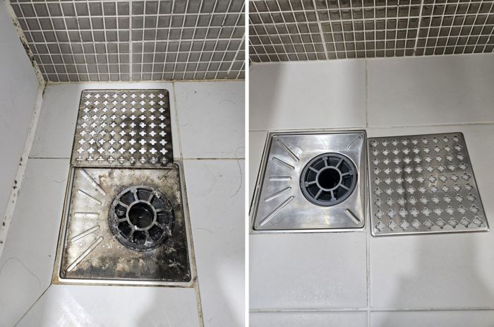
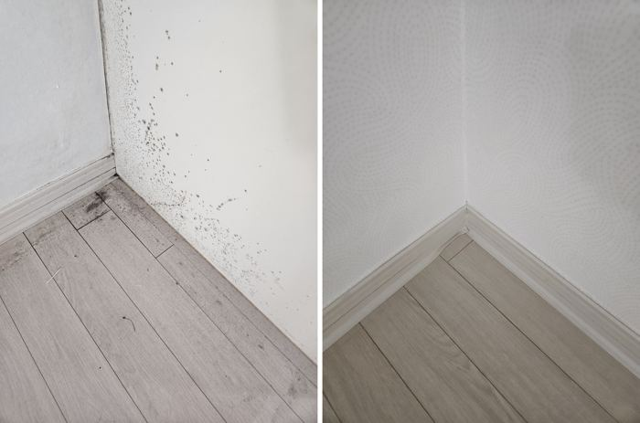
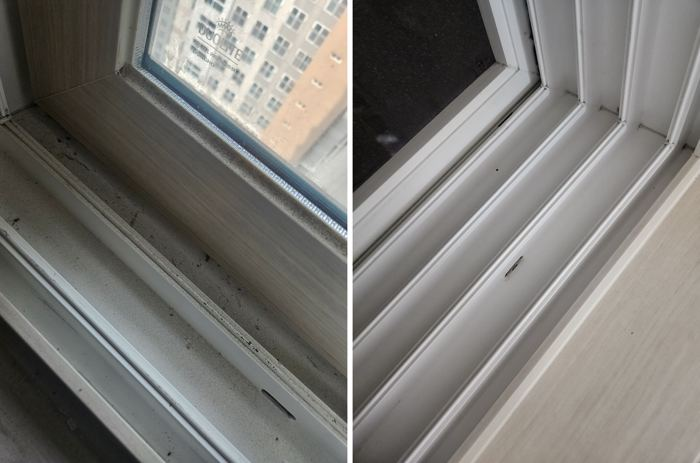
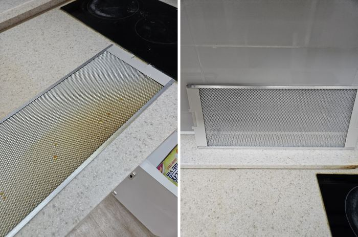
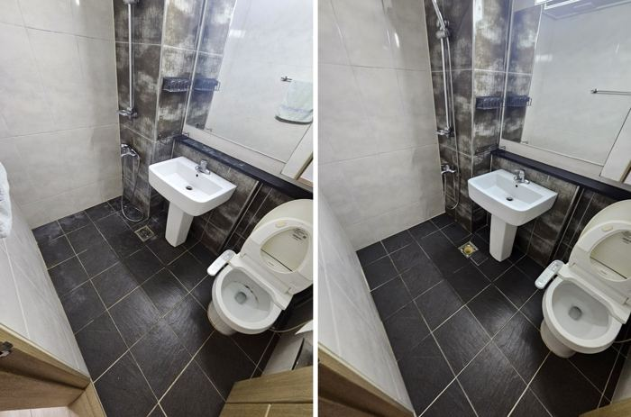

작업 사례
네이버 블로그에 올리는 작업 일지를 여기서 먼저, 더 편하게 보실 수 있어요. 현장별 기록과 욕실·주방·창틀처럼 공간별로 모은 글이에요.

청주입주청소 — 9월 27일 청주 우림필유 현장, 욕실 전경·방 전경·베란다 바닥 정리
— 천안·아산 나우클린 현장 기록 — 안녕하세요, 천안·아산에서 입주청소와 이사청소를 하는 나우클린입니다. …

살다 나간 집, 싱크대 하부장·후드·변기 옆면까지 열어서 본 현장 (9/18)
— 천안·아산 나우클린 공간별 정리 — 나우클린입니다. 오늘은 9월 18일에 진행한 이사청소 현장이에요. 앞…

빈집 욕실 2곳 현장, 걸레받이 곰팡이·후드 기름때·창틀 벌레까지 (9/14)
— 천안·아산 나우클린 작업 일지 — 안녕하세요, 천안·아산에서 입주청소와 이사청소를 하는 나우클린입니다. …

7월 31일 현장, 방 샷시 레일·방 창틀(유리 하단)·방 전경 정리
— 천안·아산 나우클린 공간별 정리 — 천안·아산 입주청소 나우클린입니다. 7월 31일에 다녀온 입주청소 현…

7월 30일 현장, 주방 하부장 내부·욕실 변기 뒤·젠다이·방 샷시 레일 정리
— 천안·아산 나우클린 작업 일지 — 안녕하세요, 천안·아산에서 입주청소와 이사청소를 하는 나우클린입니다. …

7월 27일 현장, 방 샷시 레일·욕실 벽 타일(샤워기 뒤)·욕실 선반·벽 모서리 정리
— 천안·아산 나우클린 작업 일지 — 천안·아산 입주청소 나우클린입니다. 7월 27일에 다녀온 구축 이사청소…

7월 24일 현장, 거실 샷시 레일·방 샷시 레일·욕실 바닥 배수구 트랩 정리
— 천안·아산 나우클린 현장 기록 — 안녕하세요, 천안·아산에서 입주청소와 이사청소를 하는 나우클린입니다. …

7월 23일 현장, 거실 샷시 레일·베란다 샷시 레일·욕실 전경 정리
— 천안·아산 나우클린 공간별 정리 — 안녕하세요, 천안·아산에서 입주청소와 이사청소를 하는 나우클린입니다.…

7월 20일 현장, 방 벽지 하단·걸레받이·방 벽 모서리·걸레받이·방 조명 커버 정리
— 천안·아산 나우클린 현장 기록 — 나우클린입니다. 오늘은 지난 현장 기록을 하나 정리해 봤어요. 7월 2…

7월 20일 현장, 베란다 샷시 레일·주방 하부장 내부(싱크 아래)·욕실 전경 정리
— 천안·아산 나우클린 공간별 정리 — 천안·아산 입주청소 나우클린입니다. 7월 20일에 다녀온 신축 입주청…

7월 10일 현장, 욕실 바닥 배수구 트랩·방 창틀 레일·베란다 바닥 정리
— 천안·아산 나우클린 현장 기록 — 나우클린입니다. 오늘은 지난 현장 기록을 하나 정리해 봤어요. 7월 1…

방·수납 편 | 걸레받이·붙박이장·창틀, 7월 8집 비교
— 천안·아산 나우클린 공간별 정리 — 7월에 다녀온 8집의 방·수납만 모아 봤어요. 집마다 방·수납 오염 …

창틀·베란다 편 | 창틀·샷시 레일·바닥, 7월 8집 비교
— 천안·아산 나우클린 현장 기록 — 7월에 다녀온 8집의 창틀·베란다만 모아 봤어요. 집마다 창틀·베란다 …

주방 편 | 후드·싱크·수납장, 7월 8집 비교
— 천안·아산 나우클린 작업 일지 — 7월에 다녀온 8집의 주방만 모아 봤어요. 집마다 주방 오염 모양이 조…

욕실 편 | 세면대·변기·샤워부스, 7월 8집 비교
— 천안·아산 나우클린 현장 기록 — 7월에 다녀온 8집의 욕실만 모아 봤어요. 집마다 욕실 오염 모양이 조…

방·수납장 편 | 걸레받이 곰팡이·붙박이장 서랍 레일, 두 집 비교
— 천안·아산 나우클린 현장 기록 — 방은 넓어서 깨끗해 보이지만, 걸레받이와 수납장 안이 핵심이에요. 9/…

창틀·베란다 편 | 샷시 레일 틈 먼지·벌레·낙엽, 두 집 비교
— 천안·아산 나우클린 작업 일지 — 창틀과 베란다는 집이 비어 있든 살다 나갔든 거의 똑같이 더러워지는 곳…

주방 편 | 후드 필터 기름때와 싱크대 하부장 안쪽, 두 집 비교
— 천안·아산 나우클린 현장 기록 — 주방은 두 집 모두 후드 필터가 가장 심했어요. 9/14 빈집과 9/1…

욕실 편 | 세면대·변기 옆면·샤워부스 물때, 두 집 비교
— 천안·아산 나우클린 현장 기록 — 욕실은 집마다 오염 모양이 달라요. 9월에 다녀온 두 집, 비어 있던 …